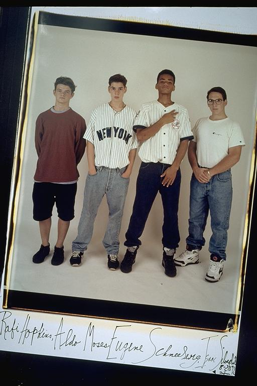

Pals: Boys Who Grew Up Together
elsadorfman.com/pals
Aldo: So, this was basically the filming crew. Eugene and I were stand-ins at best. But we really wanted to be part of this filming crew, and eventually, I worked myself into the role of the faceless, nameless guy who gets beaten and killed in every scene … ahhh … the sweet swell of victory. Let that be a lesson, kids -- hard work is often rewarded, as long as you weren't working to gain self-esteem.

elsad@comcast.net